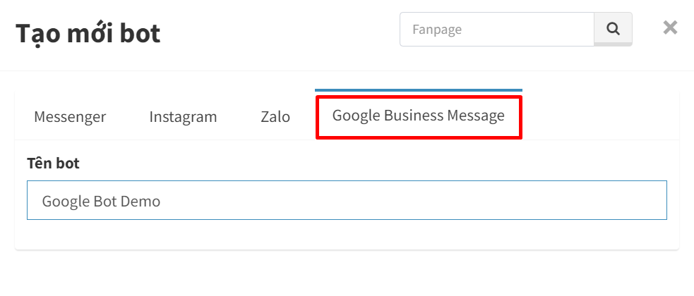

Hướng dẫn tạo Chatbot Google
Google Business Messages là gì và nó hoạt động như thế nào?
Google Business Messages hoặc Google Business Chat là một kênh trò chuyện mới được Google cho ra mắt từ đầu năm 2022. Cho phép người dùng trên Internet liên hệ trực tiếp với một doanh nghiệp bằng tin nhắn, nó có thể được truy cập thông qua ứng dụng Google Maps hoặc kết quả tìm kiếm miễn phí của Google trên trình duyệt di động để tạo ra trải nghiệm nhắn tin nhanh chóng, thuận lợi, làm hài lòng khách hàng và thúc đẩy kết quả kinh doanh. Tính năng này chỉ xuất hiện khi người dùng truy cập trên iOS và Android.
Khi người dùng nhấn vào nút Trò chuyện, nút này sẽ mở ra một hộp thoại trò chuyện với thương hiệu của bạn và họ sẽ nhận được một tin nhắn chào mừng tự động.
Cuộc trò chuyện với khách hàng có thể được thực hiện thông qua công cụ nhắn tin trên Google My Business hoặc một hệ thống trả lời tự động.
Hệ thống trả lời tự động?
Đúng, bạn có thể tạo một chatbot của Google để chào hỏi khách hàng, trả lời câu hỏi của họ và cung cấp hỗ trợ mà họ cần.
Sử dụng chatbot mang lại một số lợi thế. Ví dụ: bạn sẽ có thể trả lời khách hàng của mình trong vài giây. Và tốc độ phản hồi là một trong những yếu tố quan trọng nhất hiện nay. Bạn cũng có thể cung cấp hỗ trợ 24/7 bất kỳ lúc nào hoặc ngày nào. Và quan trọng nhất, Chatbot Google có thể phản hồi theo kịch bản bao gồm nhiều câu hỏi của khách hàng giúp doanh nghiệp có thể tập trung nhân lực của mình để giải quyết các vấn đề khác phức tạp hơn.
Bạn sẽ không lãng phí thời gian của nhân viên và tiền bạc của mình cho các câu hỏi thường xuyên lặp đi lặp lại của khách hàng.
Hướng Dẫn Tạo Chatbot cho Google Business Message
Bước 1: Tạo Chatbot
Các bạn đăng nhập vào https://ahachat.com. Sau đó bấm tạo mới bot → chọn qua Google Business Message → Đặt tên cho bot của mình (xem lưu ý cách đặt tên bên dưới)

Bước 2: Kiểm Tra Bot
Google Business Message chỉ có thể được sử dụng trên các thiết bị Android hoặc Apple. Lấy liên kết kiểm tra tương ứng với thiết bị của bạn.
Liên kết kiểm tra sẽ không hoạt động trên trình duyệt Messenger hoặc Facebook, chúng tôi khuyên bạn nên gửi liên kết kiểm tra đến email của bạn và mở nó từ email trên điện thoại. Nếu bạn vẫn muốn gửi liên kết thử nghiệm bằng Messenger, vui lòng làm theo hướng dẫn trên hình ảnh bên dưới để bắt đầu cuộc trò chuyện với Google Business Message.
Bước 3: Thêm Điểm Truy Cập
Điểm truy cập là nơi người dùng có thể bắt đầu cuộc trò chuyện với doanh nghiệp. Mỗi điểm vào có một diện mạo duy nhất và xuất hiện ở một nơi khác nhau.
Chatbot của bạn sẽ chỉ hoạt động trên bất kỳ điểm nhập nào sau khi đã được xác thực và khởi chạy.
Vào menu cài đặt → chọn tab Chung bạn sẽ thấy giao diện để thêm điểm truy cập
3.1 Cài đặt chung: đặt tên cho bot, thêm logo, và nội dung chào mừng
3.2 Location: Bạn cần thêm ít nhất một vị trí để cho phép khách hàng nhắn tin cho doanh nghiệp của bạn từ Google Maps.
Để thực hiện bạn tích vào Location → chọn Thêm mới → Nhập tên cho địa điểm (trùng với tên Bot và tên địa điểm của bạn trên Google Map).
Tiếp tục bấm vào Tìm Place ID → tìm kiếm vị trí địa điểm của bạn để lấy Place ID
Lưu ý: Place ID chỉ có hiệu lực khi vị trí của bạn đã được xác minh
3.2 Non-Local: Chọn vào đây để thêm nút trò chuyện vào các vị trí khác mà không phải là Google Maps.
Để kích hoạt bạn cần thêm số điện thoại và tên miền trang web của mình.
Liên kết trang web - điểm truy cập cho phép hiển thị nút trò chuyện của bạn khi liên kết trang web xuất hiện trong Tìm kiếm.
Điện thoại - điểm truy cập này cho phép nút trò chuyện hiển thị từ ứng dụng Điện thoại của Google khi họ nhập số điện thoại của bạn.
Xác Thực Và Khởi Chạy Chatbot Google Lên Địa Điểm Trên Map
Bước 1: Xác Thực Bot
Kiểm tra lại bot và xác nhận mọi thứ đã sẵn sàng, Google sẽ cần xác thực chatbot của bạn trước khi chatbot được cung cấp cho công chúng.
Sau khi cung cấp thông tin để xác thực bạn sẽ nhận được 2 email được gửi từ ([email protected]) chứa nội dung yêu cầu chấp nhận và Security key, bạn thực hiện phản hồi lại theo hướng dẫn từ họ. Việc xác thực sẽ diễn ra trong vòng 2-3 ngày.
Để thuận lợi cho việc Google đồng ý xác thực bạn cần lưu ý các vấn để dưới đây:
- Tên chatbot không được đại diện cho một cá nhân/thử nghiệm/bản demo và nó cũng phải có mối liên hệ với doanh nghiệp/thương hiệu.
- Để xác thực cần phải dùng tài khoản mail của công ty đại diện cho doanh nghiệp và miền email phải liên quan đến tên đại lý/thương hiệu. các địa chỉ email từ gmail/yahoo hoặc các địa chỉ chung chung sẽ không được chấp nhận.
- Logo thương hiệu cũng nên liên quan đến doanh nghiệp.
Bước 2: Xác Thực Địa Điểm
Sau khi xác thực bot thành công bạn tiếp tục xác thực địa điểm đã thêm để liên kết với Bot
Để xác thực bạn bấm vào nút xác thực bên cạnh địa điểm mà bạn đã thêm như hình dưới.
Lưu ý: Để hiện nút xác thực thì bạn phải hoàn thành xong Bước 1
Việc xác thực sẽ mất khoản 24h và bạn sẽ nhận được mail thông báo thành công
Bước 3: Khởi Chạy Bot
Giai đoạn cuối đó là khởi chạy cho ra mắt địa điểm để bot có thể hoạt động được trên địa điểm đó.
Để thực hiện bạn bấm vào nút Ra mắt bên cạnh địa điểm mà bạn đã xác thực thành công như hình dưới.
Q&A
Có hạn chế nào về GBM đối với bất kỳ vị trí hoặc quốc gia nào không?
Không có hạn chế về vị trí/quốc gia mà GBM sẽ không hoạt động.Mất bao nhiêu thời gian để triển khai một chatbot cho một thương hiệu trong GBM?
Nếu mọi thiết lập cho bot đã sẵn sàng (bao gồm vị trí, tên thương hiệu, logo…). Toàn bộ quá trình từ đăng ký đến xác minh cho đến khi ra mắt chatbot lên thương hiệu của bạn với sự chấp thuận của Google dự kiến trong khoảng 3-4 ngày làm việc trong một quy trình thuận lợi (không phát sinh sai thông tin).GBM có thể hỗ trợ Nhiều ngôn ngữ không?
Phụ thuộc vào vị trí thương hiệu bạn ở quốc gia/khu vực nào mà bạn có thể cài đặt cho chatbot bằng các ngôn ngữ khác nhau trong các tin nhắn hội thoại. GBM không hạn chế cho bất kỳ quốc gia/khu vực nào.Chi phí xây dựng cho Chatbot GBM?
Hiện tại chúng tôi đang cung cấp khả năng tạo 2 bot miễn phí.Các kênh triển khai Chatbot GBM?
Ngoài 4 kênh bên dưới thì thời gian sắp tới Chatbot GBM sẽ xuất hiện trong Google Ads.
Như vậy là hướng dẫn này đã xong, hi vọng bạn có thêm một nền tảng để có thể tối ưu việc khai thác tệp khách hàng của mình.